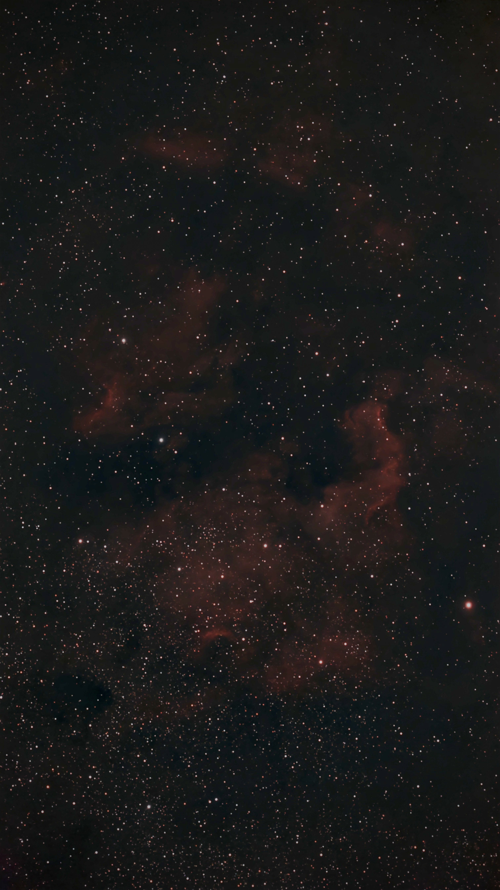

SURVEY // DSS2 COLOR
PERSONAL CAPTURE LAYER ACTIVE
MY SKY // OBSERVATION 001
PERSONAL CAPTURE
OBS-001 // NGC 7000
NGC 7000
North America Nebula
TARGET VERIFIED

TARGET
NGC 7000
COORDINATES
RA 20h 58m 47.0s
Dec +44° 19′ 48″
EQUIPMENT
Seestar S30 Pro
COORDINATE SOURCE
SIMBAD // CDS
CAPTURE DATE
NOT RECORDED
INTEGRATION TIME
NOT RECORDED
ORIGINAL FILE
IMG_9549.jpeg
PROCESSED FILE
image.png
CURRENT TARGET
NGC 7000
Astronomical target resolution handled by Aladin Lite.
FIELD OF VIEW
--
Angular width of the current sky-map viewport.
COORDINATE GRID
ICRS / J2000
PERSONAL LAYER
1 OBSERVATION
Your captured targets are mapped onto the real celestial coordinate system.
DATA PROVENANCE // NGC 7000
Target identity:
NGC 7000 / North America Nebula
Coordinates:
SIMBAD astronomical database, CDS Strasbourg
ICRS J2000:
20h 58m 47.0s, +44° 19′ 48″
Map:
Aladin Lite / CDS
Survey imagery:
DSS2 Color HiPS
Personal photography:
User-supplied original and conventionally processed files